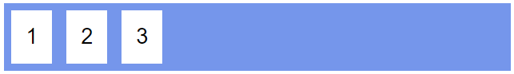
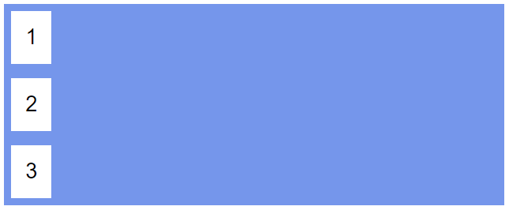
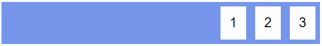
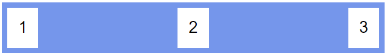
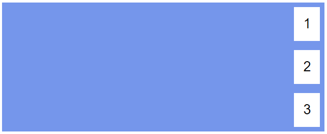
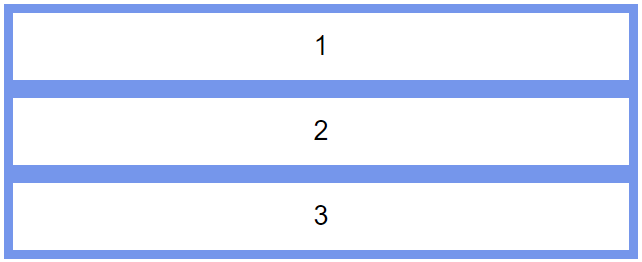
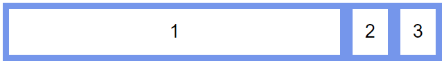
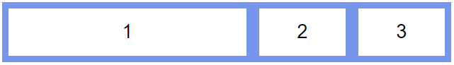
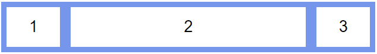

Flex
Flex (CSS Flexbox Layout Module) is a way to design flexible responsive layouts for web pages.
The main concept behind flex is the flex container. If you set a container to display: flex;, its child items' width or height will be expanded or shrunk to best fill the space available.

The direction the flex items will be stacked in is determined by the flex-direction property. The options include row, row-reverse, column, and column-reverse.

The alignment of the items in the main-axis (horizontal if flex-direction is row or row-reverse, vertical if flex-direction is column or column-reverse) is determined by the justify-content property. The options include flex-start, flex-end, space-between, space-around, and center.


The alignment of the items in the cross-axis (vertical if flex-direction is row or row-reverse, horizontal if flex-direction is column or column-reverse) is determined by the align-items property. The options include flex-start, flex-end, stretch, and center.


The child items of a flex container have a say in how they are altered. The flex-grow property on the child of a flex container defines whether the item should be the desired ratio of this item compared to its siblings.


The flex-shrink property defines how much a flex item will shrink relative to the rest of the flex items. Best used in conjunction with the flex-basis property.
The flex-basis property specifies the initial length of an item on the main-axis.

Further Reading
Last modified: May 24, 2025